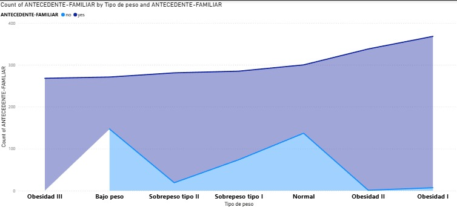
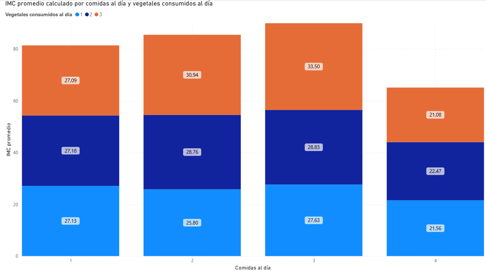

YPE html>
Power BI Dashboard Report
Reporte de Visualizaciones - Power BI
Visual 1: Título del Dashboard
Conclusión: Después de analizar y realizar esta gráfica, se puede concluir que las personas con Obesidad III a pesar de tener mayor IMC, tienen más actividad física que los de IMC de 44 y 41. Se puede recalcar que tanto los de peso normal como los de sobrepeso tanto tipo I y II y obesidad I son los que tienen aproximadamente el mismo IMC con respecto a cada uno de los tipos de actividad física
Visual 2: Título del Dashboard
Conclusión: Después de analizar la gráfica, se concluye que los de peso normal son lo que utilizan los medio de transporte donde se requiere más esfuerzo del cuerpo, tal es como la bicicleta y caminar, donde ayudan a quemar una mayor cantidad de calorías, mientras que por el otro lado , los de obesidad III no tienen un medio de transporte donde tengan un mayor esfuerzo del cuerpo para poder quemar las calorías suficientes.
Visual 3
Conclusión: Tras analizar este visual podemos concluir que a pesar de que haya una gran cantidad de personas que consumen alcohol a veces con antecedentes familiares, no parece que haya una gran relación entre el consumo de alcohol y los familiares antecedentes. Esta gran cantidad de personas se puede deber a que es muy común el consumo ocasional de alcohol
Visual 4
Conclusión: Después de analizar el visual, se concluye que los números con respecto a los diferentes tipos de obesidad no difieren demasiado unos de otros, pero se puede notar que la el tipo de peso con una mayor cantidad de personas es la de Obesidad I.
Visual 5
Conclusión: Podemos concluir que si hay una alta relación entre el promedio de comidas diarias con el tipo de obesidad, ya que a mayor promedio de comidas diarias el tipo de obesidad es mayor
Visual 6

Conclusión: Después de realizar la gráfica se puede concluir que las personas con Obesidad III todas cuentan con antecedentes de obesidad, donde también los de Obesidad II solamente 1 persona no cuenta con antecedentes, siendo de mayor probabilidad para que futuras generaciones también tengan algún tipo de obesidad y que se pueda deber más a algo genético que de hábitos.
Visual 7: Título del Dashboard
Conclusión: La gráfica muestra que tanto hombres como mujeres presentan un predominio en categorías de obesidad I, II y III, con los hombres teniendo el mayor porcentaje en obesidad III con un 11.78%. Esto indica una prevalencia de sobrepeso y obesidad en ambos géneros.
Visual 8: Título del Dashboard
Conclusión: La gráfica muestra que el consumo de alimentos altos en calorías es más frecuente en personas entre los 18 y 30 años, mientras que la actividad física tiende a disminuir con la edad. A partir de los 30 años, tanto el consumo de calorías como la actividad física bajan considerablemente. Esto sugiere que, conforme las personas envejecen, tienden a tener estilos de vida más sedentarios y reducen su ingesta calórica, lo cual podría estar relacionado con cambios en el metabolismo, salud o hábitos.
Visual 9: Título del Dashboard

Conclusión: La gráfica muestra que las personas que consumen 4 comidas al día y más vegetales tienen un IMC promedio más bajo, mientras que aquellas que consumen 3 comidas y pocos vegetales presentan el IMC promedio más alto. Esto sugiere que mayor frecuencia de comidas y mayor consumo de vegetales se asocia con un menor IMC.
Visual 10: Título del Dashboard
Conclusión:Al analizar la gráfica podemos ver que el consumo de alcohol es un factor importante a la hora del tipo de peso y a su vez de IMC ya que en el consumo de alcohol un gran porcentaje tiene algún tipo de sobrepeso o obesidad. Para hacer esto aún más claro si lo dividimos por la cantidad de actividad física podemos notar que a menor actividad física mayor es el porcentaje de personas con algún tipo de sobrepeso. También se puede dividir por género ya que suele ser mayor el consumo de alcohol en los hombres y podemos ver cómo este afecta más.
Conclusión General
Gracias al análisis realizado, es posible ver que existen diferentes factores para la obesidad donde a pesar de que la mayoría tengan antecedentes, muchas otras ocasiones no tienen obesidad por la genética/antecedente. En la mayoría de los casos las personas con obesidad en el estudio también se debe a que consumen más calorías, comen más durante el día, consumen alcohol regularmente y normalmente su medio de transporte no es el adecuado para que el cuerpo se ejercite más.